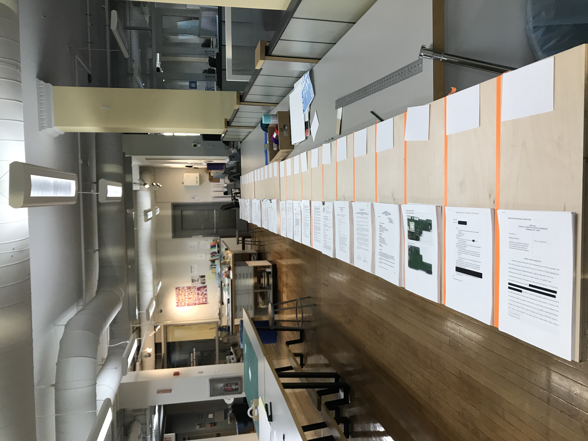
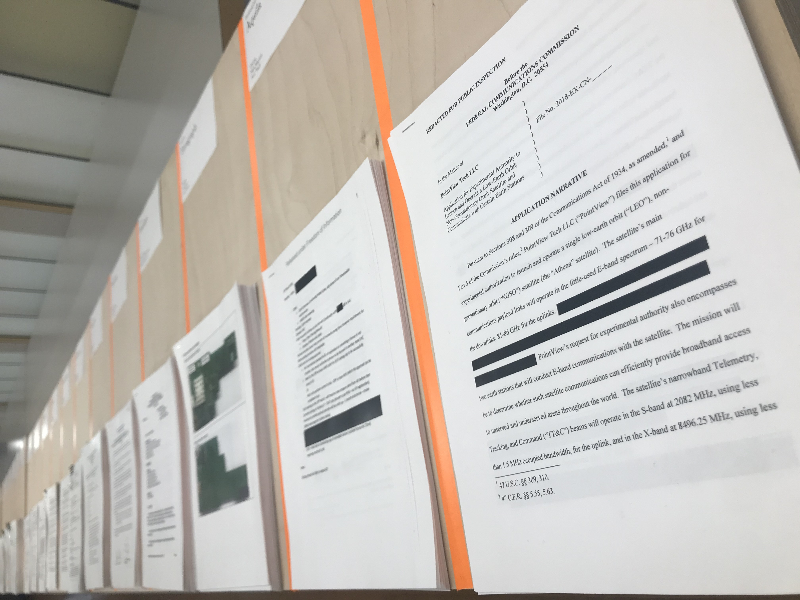
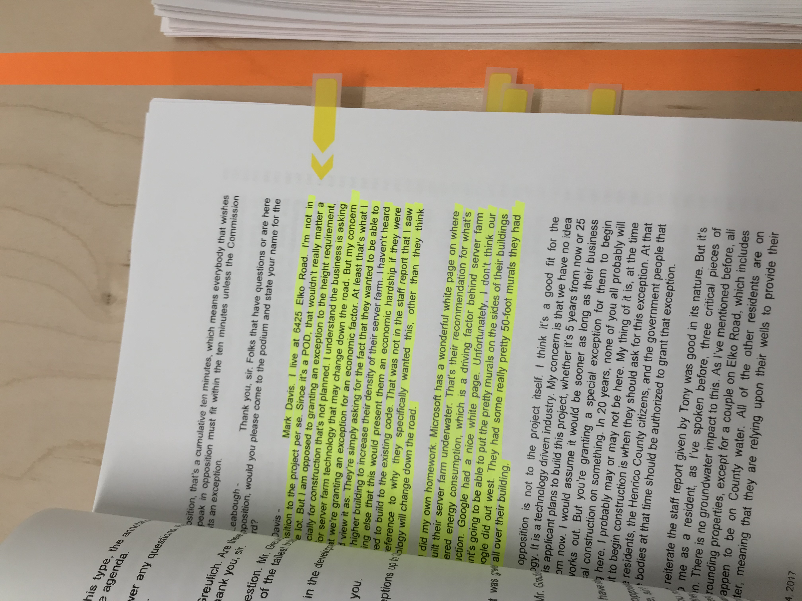
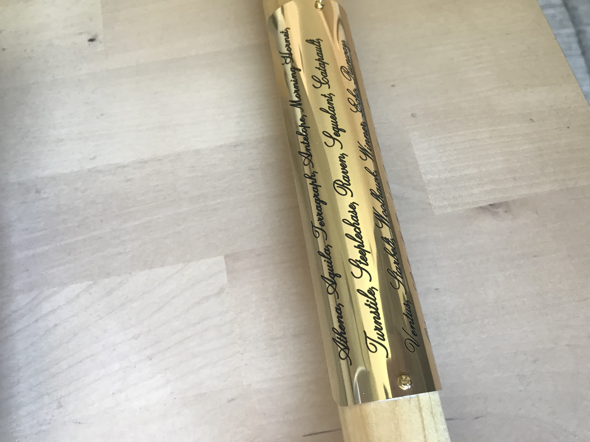

Jettisoning the Frame:
Strategies for Designing at the Threshold
23 may 2021
Mundane Power
It is a project of excavating, unfolding and unravelling the hegemonies of a material practice deeply entrenched in our cultural, social, and daily contexts
Ece Canlı, Design History, Interrupted: A Queer-Feminist Perspective



Information as a force of production calls into being particular relations of production and is at the same time formed by those relations. In classic Marxist style, one can look here at the evolution of legal forms. In the late twentieth century "intellectual property" emerged as almost an absolute private property right. One that makes the once separate and local property forms of patent, copyright, and trademark equivalent and exchangeable forms of private property. These forms need transnational legal enforcement, precisely becauseinformation is such a slippery and abstract thing.
Capital is Dead, Mckenzie Wark
